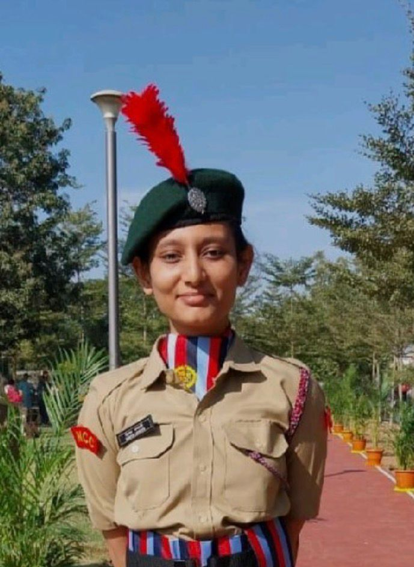

B.Tech ECE | Minor in IoT | Embedded Systems Enthusiast
I am an Electronics and Communication Engineering student with a minor in IoT, deeply interested in embedded systems, practical electronics, intelligent system design and emerging technologies. I enjoy learning new concepts, building interdisciplinary projects, and continuously strengthening both technical and leadership abilities through disciplined engagement.
Email: 23BEC099@sot.pdpu.ac.in
LinkedIn profile link: https://www.linkedin.com/in/nidhi-shukla-6403aa289?utm_source=share&utm_campaign=share_via&utm_content=profile&utm_medium=ios_app
Phone no: +91 9510957468